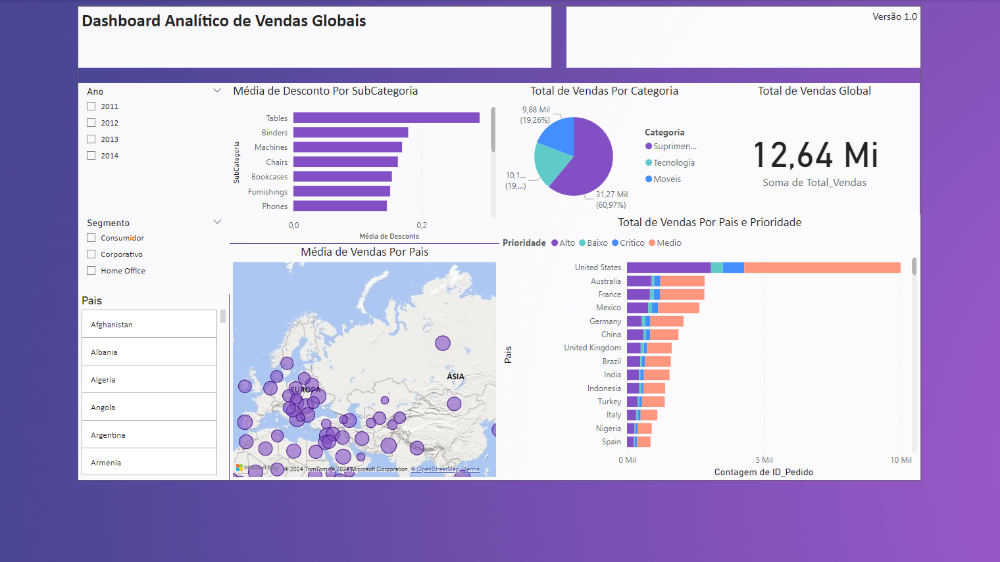
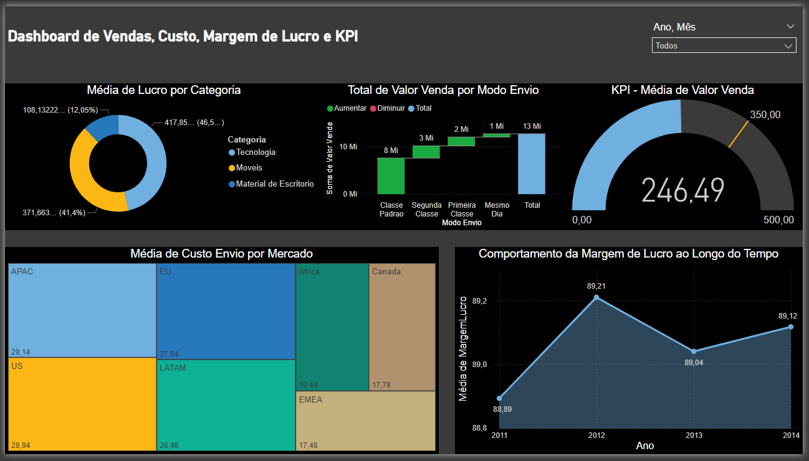
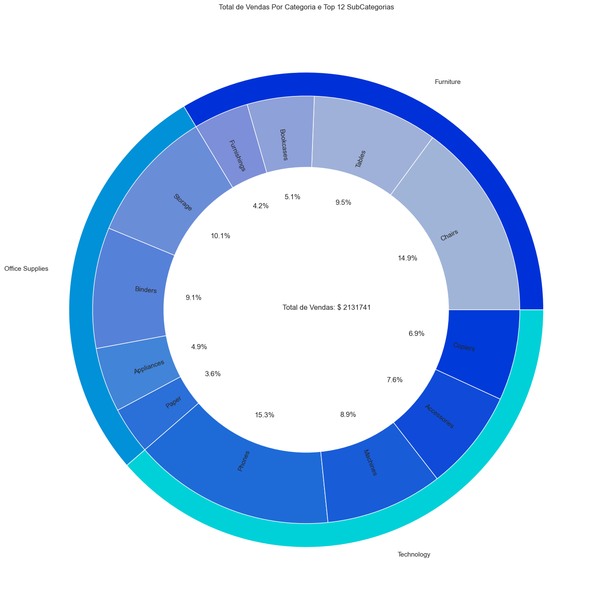
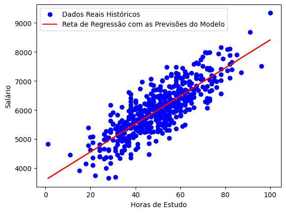

Jeferson Paz
Analista de Dados


Sobre
Com mais de 7 anos de experiência em Tecnologia da Informação, tracei uma trajetória sólida desde o suporte direto aos usuários até o gerenciamento de chamados e suporte técnico. Sou Analista de Dados com MBA em Big Data e Inteligência Competitiva, ampliando minha expertise em gerenciamento de tickets no Service Now e JIRA Service Desk, além de modelagem de dados e processos ETL em projetos de auditoria. Possuo habilidades avançadas em Python, SQL, R, Power BI e IA.
Projetos
Dashboard Analítico de Vendas Globais
Este Dashboard foi criado através do curso gratuito da Data Science Academy de Microsoft Power BI Para Business Intelligence e Data Science, utilizando dados fictícios para a criação de um Dashboard Analítico de Vendas Globais.
Dashboard Análise de Dados de Vendas, Custo, Margem de Lucro e KPI
Este dashboard é um projeto prático desenvolvido durante o curso gratuito de Microsoft Power BI da Data Science Academy. Utilizando um conjunto de dados fictícios, simulei um cenário real de análise de vendas, construindo um painel interativo para visualizar e explorar métricas como custo, margem de lucro e KPIs.

Análise Exploratória de Dados em Linguagem Python Para a Área de Varejo
Nesta análise exploratória de dados, focamos em diversas perguntas de negócio cruciais para a área de varejo, utilizando ferramentas avançadas de visualização em Python.

Análise Estatística com Statsmodels
Analisei se existe uma relação entre a área dos imóveis (em metros quadrados) e o valor do aluguel em uma cidade específica. Utilizando métodos estatísticos, como a regressão linear, investigamos se imóveis maiores tendem a ter aluguéis mais altos e quantificamos essa relação. O objetivo é entender como o tamanho do imóvel influencia o preço do aluguel, proporcionando insights valiosos para locatários e investidores imobiliários.

Machine Learning com Scikit-Learn
Neste projeto, buscamos analisar a relação entre o tempo dedicado aos estudos em horas por mês e o salário de um indivíduo. Utilizando técnicas de machine learning, como a regressão linear, pretendemos investigar se há uma correlação entre o número de horas estudadas mensalmente e o valor do salário. O objetivo é criar um modelo preditivo que possa estimar o salário com base nas horas de estudo, oferecendo insights úteis para profissionais e estudantes que desejam entender melhor o impacto do investimento em educação sobre a remuneração. Utilizando a biblioteca Scikit-Learn, implementaremos e avaliamos nosso modelo para verificar a precisão das previsões e fornecer recomendações baseadas nos resultados.

Análise de Séries Temporais em Python
Analisei dados de vendas de 2023 para prever o total de vendas em janeiro de 2024. Comecei ajustando os dados para um formato adequado para análise temporal e criei gráficos para explorar as tendências de vendas ao longo do tempo. Em seguida, apliquei o modelo de Suavização Exponencial Simples para ajustar os dados e gerar previsões. A previsão resultante indicou que o total de vendas em janeiro de 2024 será 67.6499. O modelo provou ser eficaz, fornecendo uma estimativa útil para o planejamento futuro.

Classificação de Imagens com Deep Learning usando TensorFlow
O projeto desenvolve um modelo de Inteligência Artificial utilizando Deep Learning para a classificação de imagens. O objetivo é treinar o modelo para identificar e categorizar imagens em uma das 10 categorias específicas: ['airplane', 'automobile', 'bird', 'cat', 'deer', 'dog', 'frog', 'horse', 'ship', 'truck']. Usando o TensorFlow, um framework poderoso para machine learning, construímos uma rede neural capaz de aprender padrões complexos nas imagens, permitindo a classificação precisa de novas imagens inseridas no modelo.
Formação
- MBA em Big Data e Inteligência Competitiva - Descomplica Faculdade Digital Início: dez de 2022 | Término: ago de 2023
- Pós-graduação Lato Sensu - Especialização Privacidade e Proteção de Dados Pessoais - Descomplica Faculdade Digital Início: jan de 2023 | Término: ago de 2023
-
 Pós-Graduação – Especialização Business Intelligence, Big Data e Analytics - Ciência de Dados - UNOPAR - Universidade Norte do Paraná
Início: jul de 2022 | Término: abr de 2023
Pós-Graduação – Especialização Business Intelligence, Big Data e Analytics - Ciência de Dados - UNOPAR - Universidade Norte do Paraná
Início: jul de 2022 | Término: abr de 2023
-
Tecnólogo Análise e Desenvolvimento de Sistemas - UNOPAR - Universidade Norte do Paraná
Início: jun de 2019 | Término: jun de 2022
- Técnico Montagem, Manutenção e Rede de Computadores - SOS Computadores Início: jan de 2006 | Término: fev de 2007
Tecnologias
Experiência
-
Analista de Suporte I TI | N3 | Sênior - SONDA
Período: Junho de 2022 - Presente
Como Analista de Suporte de TI na SONDA, uma empresa líder em tecnologia e serviços, desempenho um papel crucial ao fornecer suporte técnico para a Roche, uma renomada empresa farmacêutica global. Gerencio tickets usando a plataforma ServiceNow, oferecendo suporte técnico essencial aos usuários das soluções tecnológicas da organização. Minhas responsabilidades incluem orientar os clientes no uso adequado das ferramentas, gerenciar acessos e configurações, realizar manutenção preventiva e corretiva em dispositivos como estações de trabalho e periféricos. Além disso, forneço assistência técnica durante eventos internos e externos, e conduzo treinamentos de TI para novos membros da equipe que se juntam à Roche.
-

Operador de Produção de Documentos I | TI - Temporário - Randstad Brasil
Período: Junho de 2022 - Julho de 2022
Trabalhei na Xerox, onde forneci suporte para a Roche, uma empresa farmacêutica, cuidando das impressoras. Utilizei a plataforma Service Now para gerenciar os pedidos de manutenção das impressoras. Além disso, ajudei com tarefas como cópias e impressões de documentos, monitorando e reabastecendo os suprimentos das impressoras para que elas sempre funcionassem bem. Também estive à disposição para resolver problemas quando as impressoras apresentavam dificuldades, sendo a primeira pessoa a responder nesses casos. Meu objetivo era garantir que as coisas corressem bem e que as impressoras estivessem sempre prontas para uso.
-

Auxiliar de Projetos TI - Temporário - EY
Período: Dezembro de 2021 - Março de 2022
Trabalhei como Auxiliar de Projetos de TI, onde usei várias ferramentas para melhorar nossos processos. Utilizei ferramentas como Alteryx, Excel, Power BI, AWS e SQL para organizar e extrair informações importantes. No meu dia a dia, administrei nossos projetos usando o Jira Service Desk, mantendo tudo organizado e atualizado. Também ajudei a equipe de auditoria, verificando documentos importantes para garantir que estivessem corretos.
-
Auxiliar de Designer Gráfico | TI - ZETA BYTE
Período: Janeiro de 2016 - Novembro de 2017
Trabalhando em um bureau gráfico, desenvolvi habilidades em criação de layouts, impressão em PVC e gravação de informações em cartões RFID. Além disso, minha comunicação eficiente com os clientes, tanto por e-mail quanto por telefone, me permitia entender suas necessidades e solucionar possíveis problemas. Eu também era responsável por acabamentos de corte, vinco e furo nos produtos, demonstrando minha habilidade manual e atenção aos detalhes. Após um ano, fui promovido a Auxiliar de Designer Gráfico, onde minhas competências foram ainda mais desenvolvidas. A partir da elaboração de relatórios de produção e vendas, pude demonstrar minha habilidade analítica e organização. Além disso, minha experiência em manutenção de computadores, compras de insumos e gestão de estoque foram essenciais para aperfeiçoar minha habilidade em gestão de projetos. Por fim, eu também era responsável por solicitar chamados para a manutenção das impressoras, o que me permitiu desenvolver uma compreensão técnica e prática da produção gráfica.
-
Assistente Administrativo | TI - Atual Card
Período: Outubro de 2010 - Dezembro de 2013
Iniciei minha trajetória profissional no atendimento e desenvolvimento de layouts para clientes. Com o tempo, fui promovido para a posição de Assistente Administrativo, onde assumi responsabilidades como atendimento telefônico, gestão de caixa, pagamentos de faturas e elaboração de relatórios gerenciais. Diante do meu bom desempenho e conhecimentos em informática, fui convidado a migrar para a área de TI. Nesse novo papel, desempenhei funções como configuração de e-mails, backups, instalação do Windows e manutenção de computadores e servidores, utilizando ferramentas como Corel Draw, Adobe Photoshop e Microsoft Office. Essa transição destaca minha versatilidade e capacidade de aprender e se adaptar a diferentes desafios profissionais.
Guia de Resenhas
Recomendações

"Jeferson, sempre foi um profissional muito comprometido em tudo que faz, foi ótimo ter trabalhado com você alguns anos, continue sempre assim que você chegará longe!"

"Jeferson, Obrigado pelo seu trabalho incrível! Sua dedicação e habilidades são inestimáveis para a nossa equipe. O seu trabalho é muito apreciado e valorizado. Continue brilhando e mostrando sua excelência profissional."

"Jeferson Paz, o compromisso que você tem em buscar soluções eficientes em cada tarefa é admirável. Além disso, sua capacidade de liderar e motivar os colegas demonstra um profissional verdadeiramente excepcional. Seu trabalho não apenas alcança metas, mas também redefine os padrões de excelência. Parabéns pelo excelente trabalho e obrigado por toda ajuda e ensinamento!!"

"Demonstra comprometimento excepcional, pontualidade e seriedade no trabalho. É reconhecido por sua postura proativa, respeitosa e colaborativa, contribuindo positivamente para o ambiente de trabalho. Tem um forte interesse em adquirir conhecimento, o que fortalece sua contribuição contínua à equipe!"

"Recebeu reconhecimento do cliente Roche pelo excelente trabalho e dedicação ao evento híbrido de Diversidade, Equidade e Inclusão, que foi fundamental para o sucesso dessa entrega. Muito obrigada pelo seu compromisso e dedicação em sempre apoiar e contribuir para o benefício do nosso cliente."

"Jeferson é um ótimo profissional de TI. Sempre disponível para ajudar e resolve os problemas com calma e eficiência. Recomendo muito o trabalho dele!"
"Jeferson possui uma marca: a busca incansável por conhecimento! Sempre solícito em ajudar e compartilhar o que sabe. Comprometido em tudo que faz!"